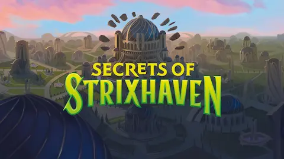

La temporada de previews de Secrets of Strixhaven arrancó oficialmente el 31 de marzo con el Debut en WeeklyMTG, y lo que se ha mostrado hasta ahora justifica el hype que llevaba meses acumulándose. El set llega el 24 de abril a tiendas físicas ⬠y el 21 en MTG Arena⬠con los prerrelease el 17 de abril. Strixhaven: School of Mages fue uno de los sets más queridos de la era reciente por su ambientación, sus colegios de magia y el concepto del Archivo Místico, y esta secuela promete ampliar todo eso con nuevas mecánicas y una narrativa que continúa donde lo dejó el set original.
El gran titular del set es el regreso del Archivo Místico con una carta garantizada en cada sobre de juego ⬠una vuelta a la política original después de años en los que los bonus sheets fueron haciéndose cada vez más raros en los sobres estándar. Las cartas confirmadas ya incluyen reprints de alta demanda como Stock Up y Sylvan Library, esta última llegando a MTG Arena por primera vez. Los sobres Collector incluirán además versiones en japonés con arte alternativo y versiones Silver Scroll, un tratamiento de foil especial que ya ha generado conversación en la comunidad.
En cuanto a mecánicas nuevas, el set presenta Opus para Prismari ⬠recompensa lanzar instantáneos y brujerías gastando cinco o más maná⬠, Infusion para Witherbloom ⬠que comprueba si ganaste vida ese turno⬠, Increment para Quandrix ⬠contadores +1/+1 cuando lanzas hechizos con más maná que el poder o resistencia de la criatura⬠y el retorno de Flashback para Lorehold. También vuelve Converge para las criaturas arcanas del plano. Son cinco mecánicas distintas, una por colegio, lo que encaja perfectamente con la fantasía de cada facción.
Los cinco dragones ancianos regresan como cartas míticas, cada uno representando uno de los colegios. Lorehold, the Historian ya ha generado comentarios positivos por su sinergia con el maná alto y el flashback. En el plano de los planewalkers, Ral Zarek reaparece como Guest Lecturer ⬠monocolor negro, sorprendiendo a los que esperaban un Ral azul-rojo⬠y Professor Dellian Fel debuta como nuevo personaje. Cinco precons de Commander, una por colegio, completan el lanzamiento. Con 125 cartas en el set principal y 379 en los productos Commander, Secrets of Strixhaven es el lanzamiento más completo del año para los jugadores de mesa.